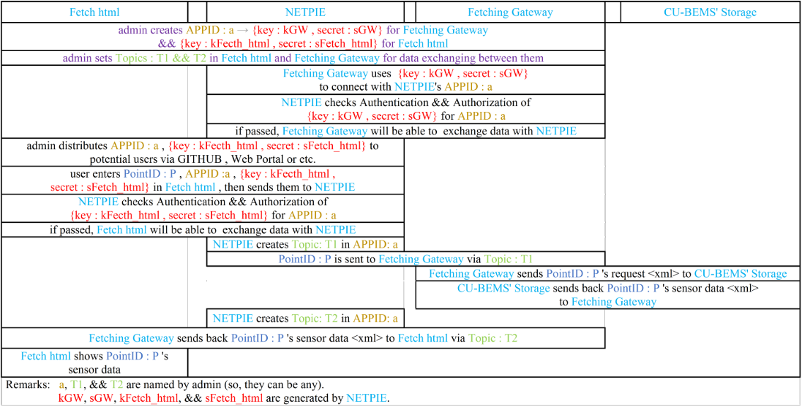

“Data-centric IoT-cloud service platform for smart communities” or IoTcloudServe@TEIN project has been established since 20 June 2018. The main purpose of this project is to integrate networked collaborative efforts of research and educational communities from developed-countries (Korea, Japan), from another developing country (Malaysia), and from a least developed country (Laos). In the project, we should like to achieve a framework design and a proof-of concept implementation for a data-centric IoT-cloud platform that can help enable IoT-domain service diversification. As an example for IoT-domain service demonstration, herein, the focus is concerned with the IoTcloudServe@TEIN’s SmartEnergy@Chula service based on the earlier completed so-called CU-BEMS (Chulalongkorn University’s Building Energy Management System) testbed.
CU-BEMS, with the technical support of CU-BEMS IEEE1888 protocol server engine from the University of Tokyo, is readily available with more than 250 energy-related sensors and smart meters that send the real-time energy and room ambient readings to CU-BEMS storage. With the total data generation rate up to 800 data points in every second, the design of CU-BEMS is to monitor, control and analyze actual energy consumption profiles as well as relevant building’s ambient environments. The main goal is not only to show site energy management automation in engineering department buildings but also to raise people awareness; for example; a smart meter records energy usage of air-conditioning systems inside a room and motion sensors in that area check the people movement. If no motion is detected in that room, then the CU-BEMS will alarm the waste energy usage of the air-conditioning system for energy saving. For information-pushing model design in CU-BEMS, the testbed provides Interactive Display as a Service (IDaaS) to notify to building users the real-time energy-related information to create awareness to staffs and students inside campus.
Accumulation, dissemination, and analysis of CU-BEMS data to all related partners, therefore, form the basic foundation of how current and future Smart-Energy@Chula system functions and evolves. In this paper, we report our implementation of an interworking service gateway to provide a secured means of interacting with CU-BEMS OpenData repository. The gateway is designed by using the well-established security mechanisms available in the NETPIE capability which can be facilitated within the IoTcloudServe@TEIN framework.
In CU-BEMS cloud, there are two types of resources to be shared. Firstly, we apply the concept of application virtualization using an open-source network function virtualization (NFV) framework, together with OpenStack cloud operating system, to allow the sharing of function or micro-service resources. As the second resource type, within the scope of this paper, sensor and control data must be shared and made securely accessible by involved researchers and developers. Practically, if one needs data for a big analytics purpose, a large archival of past data can be exported manually and forwarded to the data users on preplanned requests. However, the archival is performed only daily after midnight in order to avoid CU-BEMS storage server overload risks during the normal working hours when the system must be immediately responsive to all user interactivity via IDaaS or a normal CUBEMS web portal. The historical storage archives must be periodically scheduled when the server utilization is not too high, and hence, not exactly real-time data accessibility.
In practice, a building automation system needs on-demand real-time data sharing from the sensor cloud storage system, like CU-BEMS, to monitor and control building facilities in an energy efficient manner. Significantly, there are instantaneous data requests from various type of sensors used for decision making algorithm for building automation. To achieve that, we require a new channel means to enable the secured on-demand sharing of CU-BEMS OpenData repository via a herein so-called interworking service gateway.
The mechanism and functionality of interworking service gateway or Fetching Gateway are illustrated in the figure shown below and explained as follows.
At first, an administrator creates Application ID, later called APPID, in a NETPIE account and gets two generated keysecret pairs, namely, kGW-sGW and kFetch html-sFetch html for Fetching Gateway and Fetch html client, respectively. These key-secret pairs of NETPIE security mechanism allow the interworking service gateway to identify users’ authentication and authorization in requesting for CU-BEMS data. During the service initialization phase, the administrator also sets Topics T1 and T2 to announce where data requesters can send their requested data PointIDs as well as where the requested data values will be published subsequently.
Upon its instantiation, the gateway authenticates to NETPIE by using kGW-sGW key and remains to be in its server-listening mode waiting for any data exchange requests that would be published and notified in its subscribed NETPIE Topics.
Whenever a user wants to request for a CU-BEMS data by specifying data PointIDs, the user’s request after passing all NETPIE security checks will be sent automatically to Topic T1. The gateway, which already subscribes to Topic T1, gets the published PointID and performs any accessory IEEE1888 FETCH to CU-BEMS storage. CU-BEMS storage replies back with PointID’s data to the gateway, which in turn publishes the responded data values at NETPIE Topic T2. Finally, the Fetch html of requesting user is notified of the requested data.
http://bems.ee.eng.chula.ac.th/eng4/fl12/south/officeroom_commu/z1/aircon1/monitor/energy
http://bems.ee.eng.chula.ac.th/eng4/fl12/south/officeroom_commu/z1/sensor1/monitor/pir
http://bems.ee.eng.chula.ac.th/eng4/fl12/south/meetingroom_sjp/z1/aircon1/monitor/energy
http://bems.ee.eng.chula.ac.th/eng4/fl12/south/meetingroom_sjp/z1/sensor2/monitor/pir
http://bems.ee.eng.chula.ac.th/eng4/fl12/south/lab_csbl/z1/aircon1/monitor/energy
http://bems.ee.eng.chula.ac.th/eng4/fl12/south/lab_csbl/z1/sensor2/monitor/pir